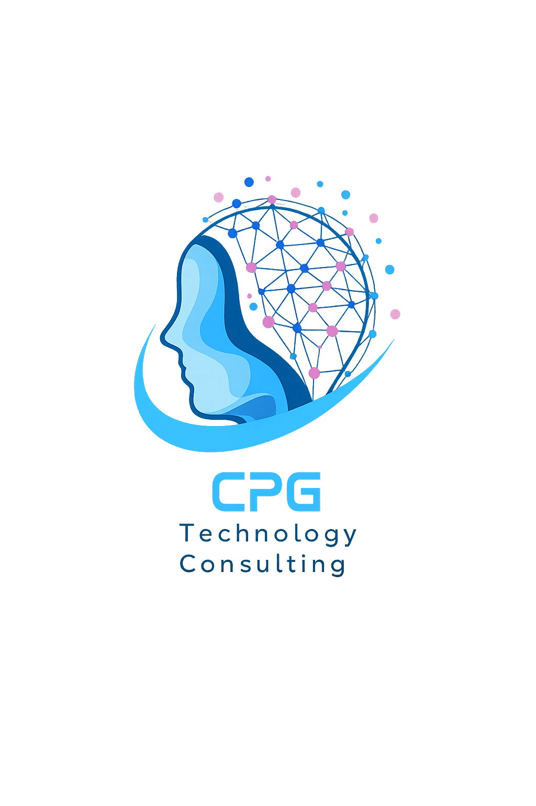
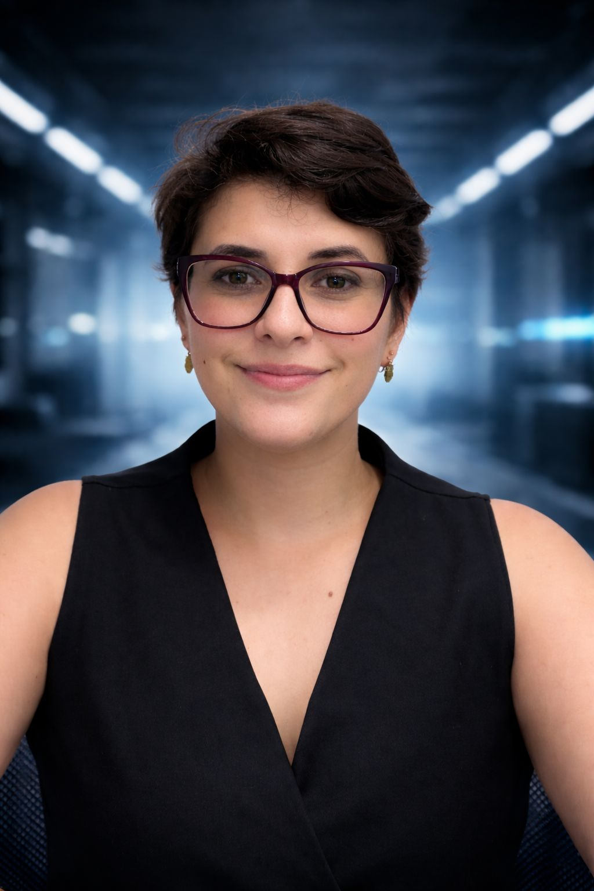

A CPG Technology Consulting nasceu com o objetivo de unir conhecimento, planejamento e governança para ajudar profissionais e empresas a evoluírem no uso da tecnologia.
Acreditamos que o conhecimento acessível e bem estruturado é a chave para transformar carreiras e melhorar a tomada de decisão em projetos de tecnologia e dados.
Por meio de cursos, conteúdos e certificações, a CPG busca capacitar profissionais para atuarem com visão estratégica, domínio técnico e pensamento analítico.


Caroline Perez Goncales é especialista em tecnologia, dados e gestão de projetos. É formada em Análise e Desenvolvimento de Sistemas, possui pós-graduação em Inteligência Artificial e Machine Learning e atualmente cursa MBA em Gerenciamento de Projetos.
Atua na área de projetos e estratégia tecnológica, com experiência em governança, análise de dados e tomada de decisão baseada em dados. Também compartilha conhecimento como instrutora da Alura e possui credenciamento no Tribunal de Justiça de São Paulo (TJSP) para atuação em temas relacionados a crimes cibernéticos.
A CPG nasceu da vontade de tornar o conhecimento técnico mais acessível, ajudando empresas e profissionais a desenvolver habilidades práticas em tecnologia, dados e gestão.
Tecnologia é para todo mundo.
© 2026 CPG Technology Consulting — Todos os direitos reservados